What Comes After a Period of Undervaluation?¶
I. Abstract¶
In his now venerated book Security Analysis (1934), Benjamin Graham preached the importance of buying undervalued stocks, i.e., stocks of higher intrinsic values than their current market value. In this experiment, I collected five stocks with the most substantial drops in one year and then analyzed their price movements in the coming year, their quantitative, and qualitative characteristics.
II. Overview of the dataset¶
The date of the experiment is 2017-06-16. Data were ordered by their most substantial drop in price and filtered to pass in only rows with Graham's recommended Price-to-Earnings ratio between 0.0 and 15.0. For an added safety measure, I also threw in Liquidation Value > 0.0, using the optimistic liquidation rate (page 560, Security Analysis sixth edition, Graham-Dodd). I also took out companies from utilities, mining, and oil industries.
Note: Please see the accompanying Appendixes page for income statements, balance sheets, and cash flow statements.
Results as follows:
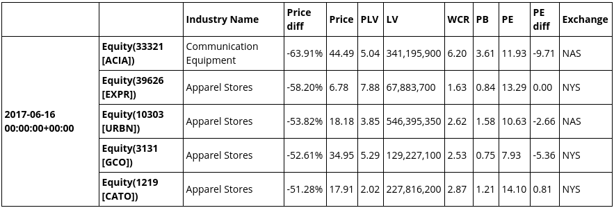
PLV¶
Price-to-Liquidation Value. Graham recommended finding undervalued stocks with liquidation value higher than market valuation of the company. In other words, PLV between 0 and 1. I was not able to find any such thing, except for Chinese-originated companies structured under VIE (Variable Interest Entity) which turned out to be fraudulent operations - a material for another article.
LV¶
Liquidation Value. A company's liquidation assets minus all liabilities. To calculate liquidation assets, we discount tangible assets by some percentage to account for the rushed assets sales during receivership.
WCR¶
Working Capital Ratio. A ratio of working capital (current assets) to current liabilities. The standard recommended value is 2-to-1. Graham also recommended performing a kind of acid test by ensuring current assets minus inventories are at least equal to current liabilities (page 592, Security Analysis sixth edition, Graham-Dodd).
PB¶
Price-to-Book ratio. Since PLV is a stricter requirement, this value may not be needed anymore, but I included it as this is a more popular measure.
PE¶
Price-to-Earnings ratio. A ratio between 0 and 15 usually signals an undervaluation, unless if the company has a potential for more substantial future earnings. Keep in mind, however, hoping for larger future earnings is inherently speculative.
PE diff¶
Difference between the stock's and industry's PE ratios. I added this factor to see how the stock's price discount compares to other stocks' in the same industry. An industry is a smaller group than a sector; I chose to use it instead of the latter to allow for more apple-to-apple comparison (i.e., I shall prefer to compare one gold mining company to another rather than with, say, a coal mining company).
First of all, let us confirm the information available to investors during that time:
- ACIA 2017-Q1 quarterly report was filed on May 9, 2017.
- EXPR 2017-Q1 quarterly report was filed on June 6, 2017.
- URBN 2017-Q1 quarterly report was filed on June 8, 2017.
- GCO 2017-Q1 quarterly report was filed on June 8, 2017.
- CATO 2017-Q1 quarterly report was filed on May 24, 2017
We can confirm that investors had access to all listed companies' latest quarterly report.
III. Future Performance¶
In this section, we analyze the next year performances of the foregoing stocks (note: Be careful! the charts' y-axis does not start from 0, which exaggerates the significance of trend).
Statistics¶
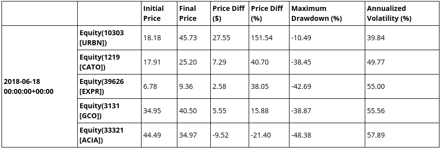
The statistics show a quick comparison between the performance of our stocks.
The following is S&P 500 chart of 16 June 2017 to 15 June 2018 to help us benchmarking the stocks' performances:
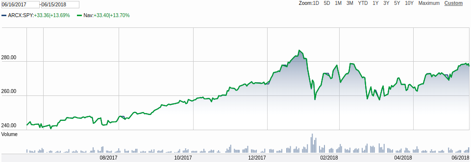
Notice from the chart that S&P 500 price gained 13.69% throughout this period and there were a couple of sharp declines throughout the first half
Charts¶
ACIA (Acacia Communications Inc.)¶
Before 2017-06-16¶
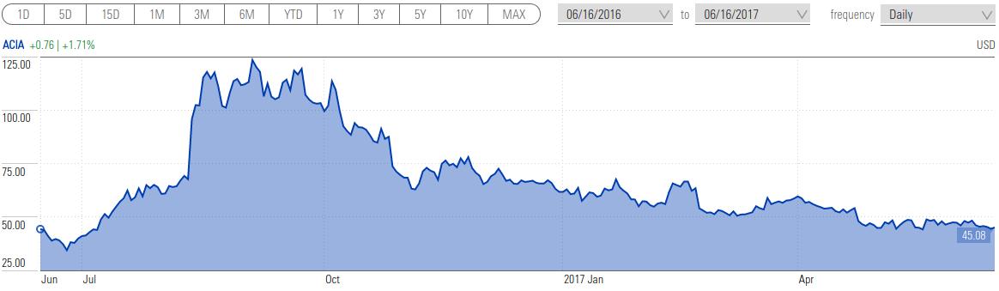
After 2017-06-16¶
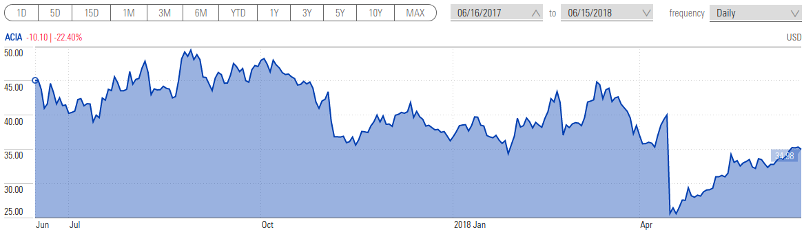
ACIA price had a terrible performance following the drop mentioned in the previous section. The initial 63.91% drop was followed by a further 48.38% drop and then followed by a rally to a price nearing $35.
EXPR (Express Inc.)¶
Before 2017-06-16¶
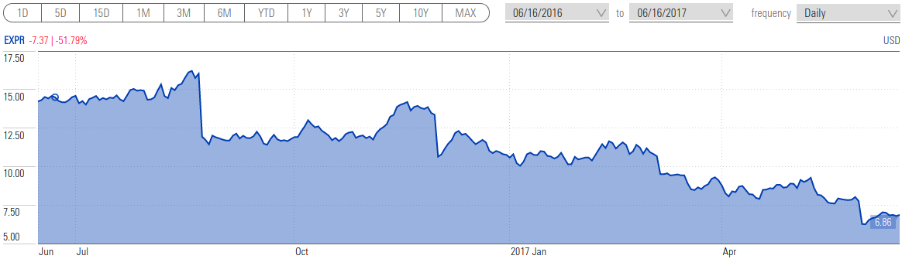
After 2017-06-16¶
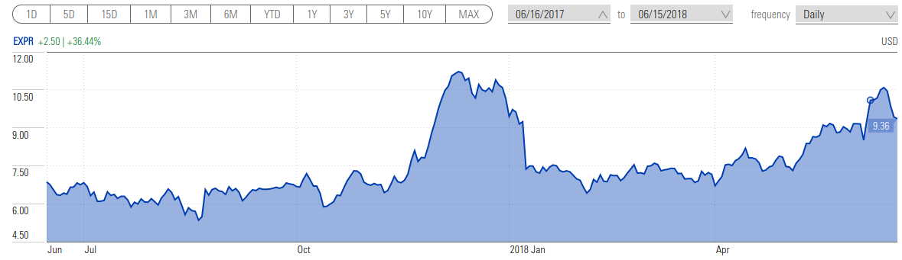
EXPR price had a huge jump around the end of 2017 (end-of-year sale?) followed by a fall and then a steady gain. Overall, the prices went up by 36.44% in the ensuing year following our experiment date.
URBN (Urban Outfitters Inc.)¶
Before 2017-06-16¶
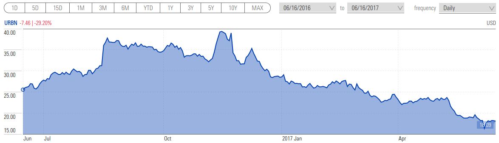
After 2017-06-16¶
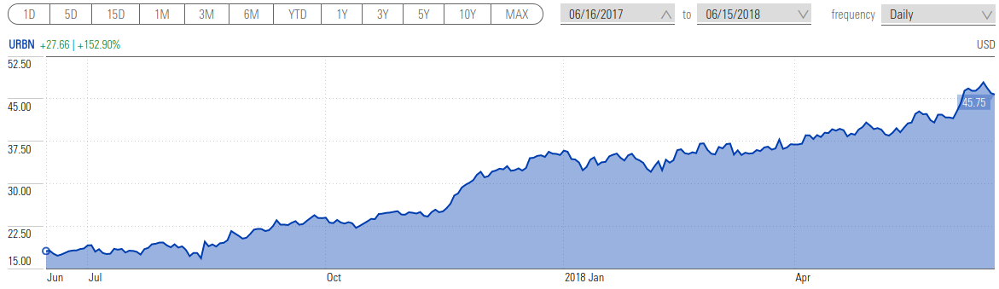
The best performing stock out of all five we have analyzed. An investment on June 16, 2017, would have rewarded us with around 2.5 times our principal.
GCO (Genesco Inc.)¶
Before 2017-06-16¶
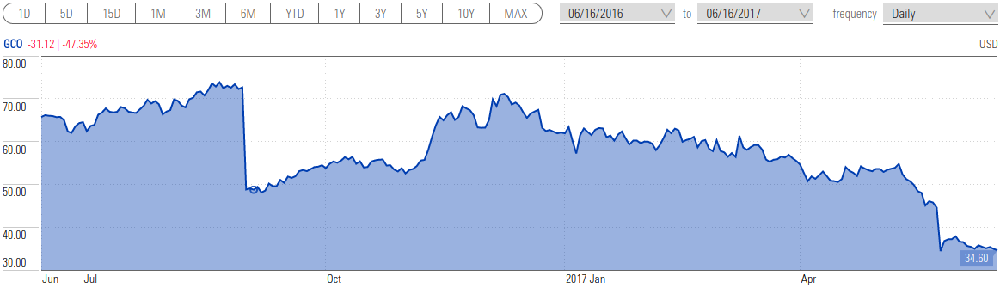
After 2017-06-16¶
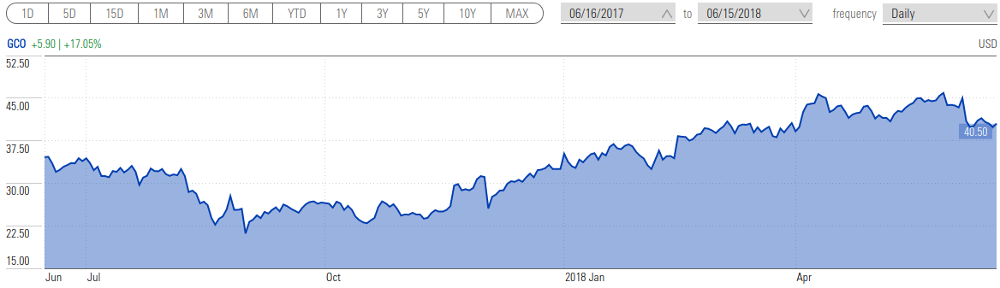
GCO starts off with a four-month decline and then a steady gain. The stock slightly overperformed S&P 500 with an increase of 15.88%.
CATO (The CATO Corporation)¶
Before 2017-06-16¶
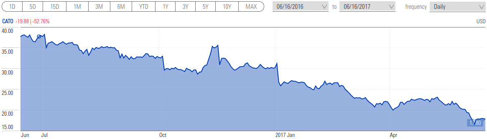
After 2017-06-16¶
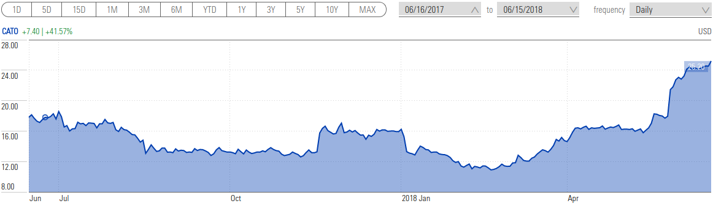
CATO stock had a somewhat flat growth up until February 2018 and then followed by a significant rally. An increase of 40.70% is the second-best gain in our selection of stocks.
IV. Initial Analysis¶
In the coming sections, we shall also look into financial reports of the companies that are available in the accompanying Appendixes page.
Our companies' Diluted Earnings per Share are as follows:
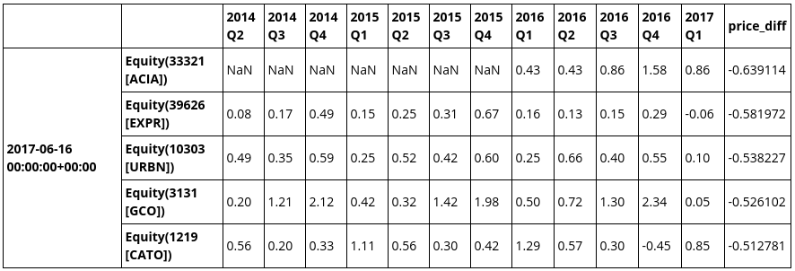
Some interesting findings so far:
ACIA recent IPO¶
ACIA had no earnings before 2016 Q1. Looking at Morningstar, their IPO was relatively recent, with the first annual report entry was in 2013.
Cyclical Earnings in The Apparel industry¶
The apparel industry has a cycle in earnings, as evident in the preceding table that the fourth quarter earnings were usually more than other quarters. This cycle, however, runs into contrary in the CATO's case, for which the first quarter had more earnings compared to others. A deeper dive into its quarterly and annual reports should tell us more about this pattern.
Due to the existence of the business cycle explained in the foregoing discussion, earnings comparisons need to be made in quarter pairs. All of the Apparel companies had worse 2017 Q1 earnings compared to their 2016 Q1 earnings, and this does seem to be the point of interest in their quarterly reports.
Declines Not Caused Solely by Quarterly Performance¶
However, it does not seem that the decline in prices was in response to this quarter's earnings report. The downward trend had started before that.
Prices Tend To Balance Themselves Over Time¶
Stock prices of undervalued stocks do tend to balance itself. In the case of Urban Outfitters Inc, it even went up to a new high. What separates this company from the rest of the pack? Todo: This finding is only valid for this small 5-stocks case, so it is not by any means conclusive. There are some quantitative methods to find, but it is a material for another article.
V. Financial Statements Analysis¶
Statements Analysis of ACIA¶
As discussed in the Overview section, a company with well-financed operations has a working capital to liabilities ratio of 2.0. In the case of ACIA, the high ratio may indicate either a financial strength or inefficient use of working capital.
In the case of ACIA, current assets are composed of:
- Cash and cash equivalents: 140
- Short-term investments: 132
- Receivables: 115
- Inventories: 34
- Prepaid expenses: 18
- Total: 438
The amount of receivables is quite dangerously substantial. A peek into its Quarterly Report is essential to find out the company's capability to collect this debt.
Another interesting item in this exhibit is its annual Stockholders' equity growth that goes as follows for 2013, 2014, 2015, and 2016: -39, -29, 8, 435 (all in millions). Notice the huge jump in 2016; This was due to the increase in "Cash and cash equivalents" (+178) and "Short-term investments" (+104). By looking at the Cash Flow Statements, we may see an increase of net income from 41 to 132 (+91) and Common stock issuance, repurchase and other financing activities that amount for an additional 199 in cash. In conclusion, 2016 was an outstanding year for ACIA, and then with the money from its additional earnings and common stock issuance, the company made an investment (or a series of investments) totaling 121 million. All these facts need to be cross-checked further by reading their 2016 Annual Report.
Epilogue¶
As we have seen from the price performance and earnings post-2017-06-16, the investment did not seem to turn into a success. It would be interesting to read through their reports as a further study to find a) what went wrong, and b) if the investment would eventually turn to be a success in the future; the price had been rallied up since 2018-04-20, the possibility is there.
Statements Analysis of EXPR¶
Stockholders' equity has shown a prosperous growth year by year. In fact, it grew 1.7 times in five years (636 million in 2017-1 from 371 million in 2013-1), that was amazing. Working capital ratio and liquidation value were both excellent, as shown in the "Overview of the Dataset" section above.
Epilogue¶
This concern was indeed a fantastic company to invest in. The stock price shot up almost twice the current stock price in December 2017. By December 6, at the stock price of 11.05, Express Inc published their 2017 Q3 Report, from where we may see a PE of 137.5 (11.05 / 0.08), which would have been a powerful signal to sell, resulting in a 163% profit.
However, it is quite unlikely that we would have kept the shares until the end of 2017. 2017 Q2 was marked with a drop in both earnings and revenue, causing a loss of 5 million, followed by another loss of 12 million in Q3. It would have been a great test of will to keep them.
Stated oppositely, however, a sharp rally of a stock price could be very well marked by a turning point from negative to positive earnings. Todo: This is a pattern that needs to be confirmed via a proper statistical method.
Statements Analysis of URBN¶
URBN and CATO use an alternative accounting method for Property, Plant, and Equipment (PPE) where they recalculate non-current assets annually instead of per-quarter. Either way does not have any effect on our analysis.
The growth of URBN's stockholders' equity was not as spectacular as EXPR. Stockholders' equity grew from 1.355 billion in 2012 to 1.694 billion in 2013 and then shrunk to 1.313 billion in 2016.
Epilogue¶
URBN stock price had since gradually increased to 45.73 in 2018-6-16, marking more than 151% increase from 2017-6-16. The performance had lower volatility compared to the other stocks we analyzed. I think this is a perfect stock to keep for a value investor. EXPR had a higher and faster return, but it was hard to decide the optimal selling point as explained in the EXPR's balance sheet analysis.
Statements Analysis of GCO¶
GCO had just taken a sizable long-term debt in 2017 Q1, as evident from its increase by 62 million from 2016 Q4 in their balance sheet.
In Chapter 7 of Security Analysis, Graham taught the idea that "good" debt is when the company is using a financial capital for an opportunity or expansion that might require a quick entry to market. "Bad" debt is when the business is required to borrow to sustain operations. To determine the nature of 2017 Q1 debts, we may need a quick scan to Cash Flow statement followed by a more detailed analysis in the quarterly report.
From its cash flow, we may see 191 million long-term debt issued as opposed to 30 million recorded for "Investments in property, plant, and equipment" and 136 million long-term debt repayment. The net cash provided by operating activities was -18 million. Thus, it was quite likely that a large part of that debt was used to cover other obligations. This information should be available from the quarterly report.
Their growth of Stockholders Equity was good, but nothing amazing like in the case of EXPR. From 2012 to 2016 their values were as follow: 809, 916, 997, 955, 921 (in millions USD).
Similar to ACIA, GCO has a significant proportion of Receivables; to the point that it is larger than its cash reserves; however, they have had a roughly similar amount of receivables during their previous years, so it was not an anomaly we need to investigate as much as the case in ACIA.
Epilogue¶
GCO stock price gradually fell well into August 2017, then plateaued for several months until it gradually gained in November. The above quick analysis seems to foretell the financial difficulty the company had in their next quarter.
Statements Analysis of CATO¶
CATO had just recovered from a loss in the 4th quarter of 2016. It was their worst quarter and the only losing quarter from the data I have gathered in this research (i.e., from the second quarter of 2014). As described in the previous chapter, CATO's earnings cycle is different from all other apparel stores we identified in this work. Therefore, we shall take these two considerations:
- Their second quarter's earnings will likely be worse.
- The current earnings shall not be compared only with the previous quarter's, but rather with the previous year's. In this case, the earnings were worse than they seem to be.
Stockholders' equity values from 2012 to 2016: 201 345, 391, 380, 413, 384 (in millions USD).
Their stockholders' equity at the end of 2016 had just fallen from the all-time high in 2015, but it still followed a growing trajectory from the previous years.
Epilogue¶
Similar to GCO, their stock price fell and followed by a plateau in August 2017. There was an excellent opportunity to buy them in 2018 February which followed by a rally to higher than 100% gain.
VI. Reports Analysis¶
From the previous section, we conclude that following items need to be clarified from quarterly and annual reports of the above concerns:
- The cause of the jump in receivables of ACIA in 2016 and 2017 Q1, and their capability to collect these debts.
- Investments by ACIA in 2016. Find, in particular, the possibility of long-lasting growth due to these investments.
- URBN and EXPR are both extraordinary concerns as they are all but growing. They were both excellent companies with an unsatisfactory first quarter, a perfect investment opportunity; This is more reasons to read their latest quarterly and annual reports thoroughly. Especially crucial is a detailed analysis of their management team.
- Long-term debt of GCO in the first quarter of 2017.
Urban Outfitters Inc. is the ideal company to own by a value investor, hence I decided to analyze it first and in more detail. Reports of the other concerns were then skimmed for comparisons.
Reports Analysis of URBN¶
This company has a significant online presence in addition to brick-and-mortar stores, and they are all integrated seamlessly, a strategy they named "omni-channel" system.
Following passage in 2017 Q1 of URBN might have been relevant to its gradual growth:
Capital and Operating Expenditures
During fiscal 2018, we plan to construct and open approximately 19 new stores, including one restaurant,expand certain existing stores, repurchase common shares, upgrade our systems, improve our capabilities in the digital channel, invest in omni-channel marketing and purchase inventory for our Retail and Wholesale segments at levels appropriate to maintain our planned sales growth. We believe that our marketing, social media, merchandise expansion and website and mobile initiatives are a significant contributor to our Retail segment sales growth. During fiscal 2018, we plan to continue our investment in these initiatives for all brands. We anticipate our capital expenditures during fiscal 2018 to be approximately $90 million, all of which are expected to be financed by cash flow from operating activities. We believe that our new store investments have the potential to generate positive cash flow within a year. We may also enter into one or more acquisitions or transactions related to the expansion of our brand offerings. We believe that our existing cash and cash equivalents, available credit facilities and future cash flows from operations will be sufficient to fund these initiatives.
The company employs a share-based compensation, a compensation method popularized by recent startups. The amount dispensed in this quarter was modest for its earnings, i.e., \$886,000 out of \$12 million net income from continuing operations.
During this quarter, the company acquired and retired 500,000 common shares at \$18.91 per share, totaling \$9.455 million, which appears in the Cash Flow statement under "Net cash used for investing activities." Shares repurchase is generally seen as a positive sign of growth as long as other factors support it.
The company had also repurchased 43,423 common shares from employees, but that was only to meet minimum statutory tax withholding requirements (i.e., the requirement to pass tax payment responsibility from employee to employer). It has no bearing towards our analysis.
The management noticed the trend in store sales vs. direct-to-customer sales as follows:
The decrease in Retail segment comparable net sales was driven by negative comparable store net sales, which were partially offset by continued growth in the direct-to-consumer channel. Negative comparable store net sales resulted from decreased transactions and average unit selling price, while units per transaction increased. The direct-to-consumer net sales increase was driven by an increase in sessions and conversion rate, which more than offset a decrease in average order value.
Moreover, in the earlier section, it was explained that the management plans to transition to shift investment to the direct-to-customer channel as they believed it aligned more with changing customer preferences.
Below is also a noteworthy part of the report:
Cash used in investing activities in the first quarter of fiscal 2017 also included \$15.3 million used to acquire the Vetri Family group of restaurants.
Reports Analysis of EXPR¶
This part of the report had quickly captured my attention:
On May 4, 2017, Express announced its intention to exit the Canadian market and Express Fashion Apparel Canada Inc.and one of its wholly owned subsidiaries filed for protection (the "Filing") in Canada under the Companies' Creditors Arrangement Act (CCAA) with the Ontario Superior Court ofJustice in Toronto. As of the Filing date, Canada retail operations will be deconsolidated from the Company's financial statements. Canadian financial results prior to the Filing will continue to be included in the Company's consolidated financial statements.
If the reasons were justifiable, selling off unprofitable operation is a sign of good management, although it will inevitably affect the stock price negatively (in other words, it may precurse a good value investing opportunity!).
Other interesting pieces of information:
- In the "2. Segment Reporting" section. From this section, it was clear that their e-commerce operations had the most substantial growth when compared to their previous year's earnings.
- In the management discussion section, they mentioned that they have noticed this trend and have taken steps to benefit from it by introducing omni-channel capabilities.
Similar to URBN, they sell their merchandises both on offline and online channels. The difference, however, is that Express Inc operates primarily in mall-based retail stores across United States, Canada, and Puerto Rico in addition to factory outlet stores. Their size of operation seems to be broader than those of URBN, but with a less systematic fashion, i.e., they were just beginning to introduce omni-channel capabilities.
They were a little late to the game, but the management team had made all the proper decisions. It seems like they are a team of old-fashioned savvy businesspeople.
V. Conclusions¶
What follows after a period of undervaluation?
Looking only at the price charts we have seen above, the answer is "usually, further losses." However, in certain rare cases, the price may rally as in the case of URBN (in EXPR's case, the rally happened after the 2nd quarter's report).
What factors contribute to price rally?
- The company is strong enough financially. EXPR and URBN are both a prime example of this characteristic.
- They have a plan for their future growth. URBN clearly had a plan that follows the changing market condition, by fully integrating their business operations. EXPR planned to close their (presumably) unprofitable operations. This second action seemed to have a delayed effect on stock price. It made sense, however, since cost savings leads to more profitability which in turn leads to a price rally.
- Other good signs from management. Repurchase of common shares in the case of URBN signified the management's confidence in the company.
Proposed workflow of analysis
- Screen stocks for desired quantitative features.
- Compare several essential characteristics such as earnings and financial strength factors.
- For each of the best stocks found from step 2, if the analyst is not familiar with its industry, find other stocks in the same industry.*
- Perform initial analysis, write down all essential facts.
- Perform financial statements analysis with all stocks found in step 2 and probably other stocks found in step 3.**
- Perform reports analysis to answer questions found in step 5. If time allows, read all reports, or otherwise read the reports of only the most interesting concerns.
*: This is the task for which domain knowledge is essential. In this work, we were lucky to find several companies in the apparel store industry, which allowed us to notice their earnings cycle. Understanding the business cycle of the companies is very important to compare them accurately.
**: In this step, write down all the facts we may need to cross-check from the quarterly and annual reports. As discussed in "Financial Statements Analysis" section above, the fewer items to cross-check, the better the company usually is. Todo: This conclusion may change with further data.